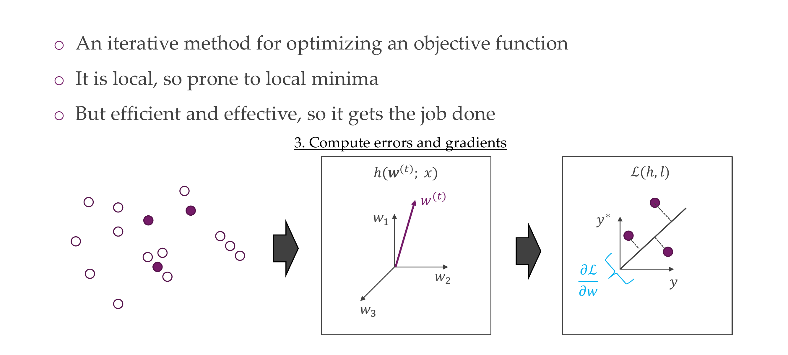
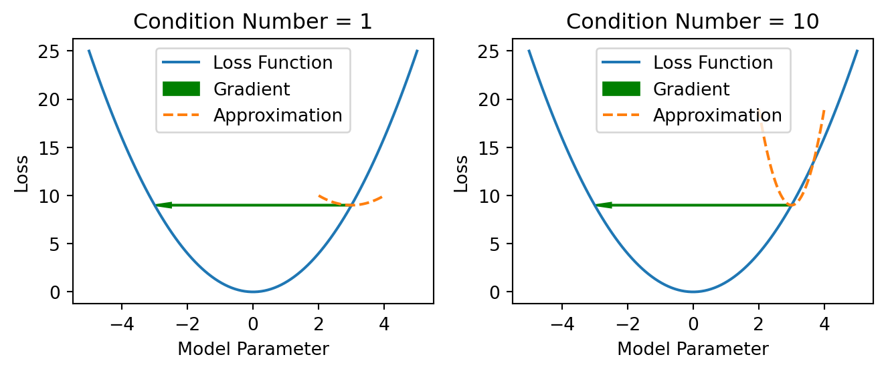
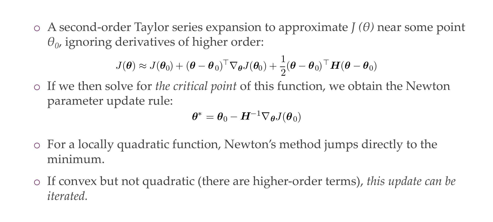
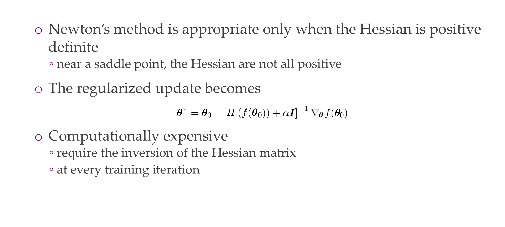

Y_hat is the prediction, each module i.e h1 comes with a set of parameters
The expectation is taken over the true data distribution which is not available. Then how do we put this into practice ## Minimizing the empirical risk, –> minimise “loss”
Slide 6
We give up to find the real minimum of the data because we have not access to all the data in the world
We take a look at what we have: training data aka empirical data distribution.
The loss is for a single sample and the empirical risk is the loss over the whole data set. We are not optimizing the real risk but we are optimizing the empirical risk which is an estimate for the real risk. If you take that for a a sample, then a sample, or a batch, we call it loss.
We take an step in the direction of minimizing the loss that is in the negative gradient of the loss
Code
import numpy as npimport matplotlib.pyplot as plt# Define a simple quadratic loss functiondef loss_function(x):return x**2# Define the derivative of the loss function (gradient)def gradient(x):return2* x# Generate x valuesx_values = np.linspace(-5, 5, 100)# Compute corresponding y values for the loss functiony_values = loss_function(x_values)plt.figure(figsize=(4, 3))# Plot the loss functionplt.plot(x_values, y_values, label='Loss Function')# Choose a point on the curvex_point =3y_point = loss_function(x_point)# Plot the point on the curveplt.scatter(x_point, y_point, color='red', label='Current Point')# Compute the gradient at the chosen pointgrad_at_point = gradient(x_point)# Plot the gradient vector as an arrowarrow_start = (x_point, y_point)arrow_end = (x_point - grad_at_point, y_point - grad_at_point**2)plt.arrow(*arrow_start, *(np.array(arrow_end) - np.array(arrow_start)), color='green', width=0.1, head_width=0.5, head_length=0.5, length_includes_head=True, label='Gradient')# Add labels and legendplt.xlabel('Model Parameter')plt.ylabel('Loss')plt.title('Gradient Direction in Steepest Ascent')plt.grid(alpha=0.1)plt.legend()# Show the plotplt.show()
In the context of optimization and gradient descent:
Steepest Ascent: The gradient of the loss function at a particular point indicates the direction in which the function increases the most rapidly. If you were to take a step in the direction of the gradient, you would be moving uphill along the loss function. This is why it’s often referred to as the direction of “steepest ascent” because the function value increases most quickly in that direction.
Steepest Descent: Conversely, to minimize the loss function, we move in the opposite direction of the gradient. This is called the direction of “steepest descent” because it leads us downhill along the loss function, toward lower values.
“Loss increases the fastest,” means that if you move in the direction of the gradient, you are moving in the direction where the loss function grows most rapidly, or where the function value increases the fastest so moving uphill. However, during optimization, we take steps in the opposite direction to decrease the loss and reach a minimum.
5 Gradient descent
Slide 7
SGD: for mini-batch, in textbooks they say is for only one sample, but in practice you do SGD in a mini-batch, here the samples you picked they are random thus stochastic gradient descent
6 Batch gradient descent for neural nets’ loss surfaces
Slide 8
7 https://losslandscape.com/explorer
Slide 9
8 Gradient descent vs. Stochastic Gradient Descent
Slide 10
Why dont we use the whole dataset to compute gradient descent?
Using the entire dataset to compute the gradient at each step of the optimization process can be computationally expensive, especially when dealing with large datasets. Also, in many cases, using the entire dataset in every iteration introduces redundancy because the information contained in the dataset might already be captured in the gradient computed from a smaller subset.
For NNs, using SGD are NOT guaranteed to find the global minimum
9 SGD properties
Slide 11
SGD estimates the gradient. And if you do any estimation, you can calculate the estandard error, as the std deviation \(\sigma\) divided by the sqrt of the batch size
For ie, if you want to get an estimate of the gradient which is twice as good we need 4 times more data
10 Quiz
Slide 12
The fact that videos are correlated i.e in 30fps it does have any to do with the batch size, it actually require higuer batch size because you have a lot less happening so that means all of your data samples are highly correlated. If you data samples are highly correlated that means you are actually very bias i.e. if you are training with a sampled dataset from those biased data then your gradient would be much more worse than if you sample randomly from all classes
This is True, it depends on the GPU. For instance for videos, a single sample may contain 30 frames so that means for a batch size not the individual number of pixels but the number of datasamples, and if you datasample its two seconds long and each second contains 30frames so 30 images, then you are basically reducing the batch size by 60 already. Another thing that lead to be GPU not able to handled is because to process videos the architecture takes more to compute, so there is a lot more computation happening.
Video in DL are currently handled by using small resolution i.e 100x100. Images are usually 224x224 or if you do object detection then images can go up to 1000x1000 pixels. So that means videos are lower resolutions
You can compute the variance in terms of low level statistics, like RGB but that does not mean anything about the variance within the NN, and if you need to do a whole forward pass before doing a backward pass then it becomes slow.
11 SGD properties
Slide 13
you can keep suffleing after every epoch, as one epoch is defined as you go through the training set once completely
Randomness leads to randomness in the class and the data. That means this help us not just optimizing for one or two classes and then in the next batch optimize for one or two classes and then leads you to jump around but instead lead to decreased a good estimate for the wholedataset
12 Batch size
Slide 14
It is more efficient than in multiple linear passes because it is more efficient to do it in one fully connected linear layer.
So one big data multiplication is faster than doing two small matrix multiplications
Small batches usually add more noise to the learning process, therefore can get stuck less in local minimas and sometimes can lead to better performance but this is not supper common.
With the increase of batch size the effective gradient would be less strong because is a better estimation across all samples so to make the model still train as quickly is we need to increase th learning rate
13 Why does mini-batch SGD work?
Slide 15
REducing the sample size does not imply reduced gradient wuality that is because the training samples could be noisy, or have biases or outliers (recall in every dataset you have lots of mislabel classes) so these noisy data allows you not to get stuck in local minimas while the real gradient may do this.
For i.e if the real gradient points in one direction and you are stuck in a local minima thne it wont help you because the the gradient descent for the whole set only have points in one direction at a certain location and if it happens to be a place where you get stuck htne you are stuck. This is contrary to stochastic where you keep taking random samples, yeah you can be stuck for the next 20 steps where you pick random samples but then you pick something that migh hav some outlier and now suddenly the gradient is pretty large and you end up scapping this local minima.
14 Stochastic gradient-based optimization
Slide 16
15 Stochastic gradient-based optimization
Slide 17
16 Stochastic gradient-based optimization
Slide 18
17 Stochastic gradient-based optimization

Slide 19
18 Stochastic gradient-based optimization
Slide 20
19 Gradient descent vs. stochastic gradient descent
Slide 21
20 Gradient descent vs. stochastic gradient descent
Slide 22
21 In a nutshell
Slide 23
22 Let’s see this in practice
Slide 24
23 https://playground.tensorflow.or
Slide 25
24 Challenges in optimization
Slide 26
NN training is non-covex optimization, these functions have lots of local optima, but we do not care about the global minimum because we care how it will perform in real life data. We care something that is optimum and that generalizes well.
25 Why are NN losses not convex?
Slide 27
26 Challenges in optimization
Slide 28
27 1. Ill-conditioning
Slide 29
The Hessian at a particular point in the function measures how well you can fit a quadratic function to this point.
The Jacobian measure how well you can fit a plane trough that point.
28 1. Ill-conditioning
Slide 30
So curvature is determine by the second derivative so its determined by the Hessian
Bottom Left plot:
If you have a negative curvature that means the cost function decreases faster than the gradient predicts.
Bottom Right plot:
If you have a positive curvature that means the cost function decreases slower than expected and eventually starts to increase
29 1. Ill-conditioning
Slide 31
Critical points are where, the gradient is zero and you can define with the Hessian what kind of critical points they are, you have a local minimum, a local maximum and saddle point
Most points in high dimensions are saddle points, this is beccause it becomes expontially (\(2^n\) combinations of th signs) to have at least one positive and at least one negative. So this is more likely.
30 Linear Algebra Recap:
Slide 32
31 1. Ill-conditioning
Slide 33
Condition number
The condition number of a matrix is a measure of how sensitive the matrix is to changes in its input. A high condition number indicates that the matrix is ill-conditioned, which can lead to numerical instability. In the context of optimization problems like gradient descent, ill-conditioned matrices can slow down convergence and make the optimization process more sensitive to small changes in the input.
Code
import numpy as npimport matplotlib.pyplot as plt# Define a quadratic loss functiondef loss_function(x):return x**2# Define the derivative of the loss function (gradient)def gradient(x):return2* x# Define the second derivative of the loss function (Hessian)def hessian(x):return2* np.ones_like(x)# Generate x valuesx_values = np.linspace(-5, 5, 100)# Set up subplotsfig, axes = plt.subplots(1, 2, figsize=(7, 3))# Plot the loss function and its gradient for different condition numbersfor i, condition_number inenumerate([1, 10]): hessian_values = condition_number * hessian(x_values)# Compute the gradient at the chosen point x_point =3 grad_at_point = gradient(x_point)# Compute the change in x delta_x = np.linspace(-1, 1, 100)# Compute the change in y based on the quadratic loss function delta_y =0.5* hessian_values[x_point] * delta_x**2# Plot the loss function axes[i].plot(x_values, loss_function(x_values), label='Loss Function')# Plot the gradient vector as an arrow axes[i].arrow(x_point, loss_function(x_point), -grad_at_point, 0, color='green', width=0.1, head_width=0.5, head_length=0.5, length_includes_head=True, label='Gradient')# Plot the change in x and corresponding change in y axes[i].plot(x_point + delta_x, loss_function(x_point) + delta_y, '--', label='Approximation') axes[i].set_xlabel('Model Parameter') axes[i].set_ylabel('Loss') axes[i].set_title(f'Condition Number = {condition_number}') axes[i].legend()plt.tight_layout()plt.show()

An ill-conditioned problem, system, or matrix refers to a situation where small changes or perturbations in the input data or parameters can lead to large changes in the output or solution. In the context of linear algebra and optimization, the condition number is a measure of how sensitive a mathematical problem is to changes in its input.
Mathematically, the condition number of a matrix \(A\) is defined as the product of the matrix norm and the norm of its inverse. It is denoted as \(\text{cond}(A) = \|A\| \cdot \|A^{-1}\|\).
If \(\text{cond}(A)\) is close to 1, the matrix is well-conditioned.
If \(\text{cond}(A)\) is much greater than 1, the matrix is ill-conditioned.
An ill-conditioned matrix is problematic for several reasons:
Sensitivity to Input Perturbations: Small changes in the input data or parameters can result in large changes in the solution, making the problem numerically unstable.
Numerical Instability: In numerical computations, ill-conditioning can lead to loss of precision, rounding errors, and difficulties in obtaining accurate solutions.
Slow Convergence: In optimization problems, ill-conditioning can slow down the convergence of iterative optimization algorithms like gradient descent.
Numerical Issues: When solving linear systems or performing matrix inversion, ill-conditioned matrices can lead to numerical instability and inaccurate results.
In the context of optimization problems, the Hessian matrix (second derivative of the loss function) plays a crucial role. If the Hessian matrix is ill-conditioned, it can make optimization algorithms more sensitive to the choice of step size and direction, potentially leading to slow convergence or convergence to suboptimal solutions.
Addressing ill-conditioning often involves using regularization techniques, preconditioning, or carefully selecting optimization algorithms that can handle such numerical challenges.
You can think of how much the matrix distort the space.
Why is now a large condition number bad? - In the case of a small condition number, going to the local minimum is quite straight forward, but in the case of a very bad conditioned number you know where to go because the gradient tells you this but you do not know the right step size. You can keep oscillating, which slows the convergence of the algorithm.
With a large condition number, Gradient Descent performs poorly because it is difficult to make a good step size.
So it is like optimizing one direction at the time if you are luckily but the ill-conditioning to the point that you will overshoot
32 1. Ill-conditioning
Slide 34
if in the tailor expansion we see that the curvature term is higher than the linear component of the Tailor function then, taking a small step size (updating w) it will increase the loss instead of decreasing it. So we end up with a higher loss.
33 2. Local minima
Slide 35
Model identifiability deals with the ability to uniquely determine the values of model parameters based on the available data. In other words, a model is identifiable if the true values of its parameters can be uniquely recovered or estimated from observed data.
If you have a network that is equivalent between different sets of parameters you can switch them around.
34 2. Local minima
Slide 36
These are the one we would have trouble (bottom left)
you reach some place and you are stuck in this place but there is a much better solution in the loss surface. That is why noisy SGD works better
35 2. Local minima: tricky thing about “blindness”
Slide 37
36 3. Ravines
Slide 38
37 3. Plateaus/Flat areas
Slide 39
In these surfaces you have zero gradients, no updates, no learning. If you have converged and that minimum tends to be flat those tend to be the ones that generalized better to new data
38 Quizz
Slide 40
Why does flat minima generalize better on test data?
We cannot say that generally they have lower loss values
It is a true statement but it is not the reason. So it does not matter whether you add more precision. For i.e you can add float64 instead and still does not change things
True
We do not use test for training
39 Why are “flat” minima preferred?
Slide 41
Why are they less likely to be the result of overfilling to train distribution?
small batches tend to converge to flat minimizers that have small eigenvalues of the Hessian
40 4. Flat areas, steep minima
Slide 42
If you have lots of flat areas with very steep minima, for example when you have logits that are scaled by a very very small number that means these numbers tend to be extremelly higuer, so they are almost on-hot like and at that point you are not getting much of the gradients from the other classes anymore.
Therefore by changing the temperature you can change how wide these locals deeps are.
41 4. Cliffs and Exploding Gradients
Slide 43
We clip it meaning we set the gradient of this eta to a treshold, you still are going in the same direction but now witch a scaled version. Escentially you reduce the size of the gradient
42 5. Long term dependencies
Slide 44
This is related to Recurrent NNs where you apply a matrix W^t over and over again, so you apply it to the input multiple times. Then you can decompose the matrix, in this case t stands for the power of t and you can see that if you apply this eigen value decomposition is simple the eigenvalues are taken to the power of t. So if you have eigenvalues larger than one then they will get insanely high, but if they are small then these eigenvalues will plummed to zero, almost vanishing.
As a product we would have a training-trajectory dependency which would be hard to recover from a bad start, IF you keep applying the same weights
Example, in time series you use Recurrent NNs and for example your prediction at time 30 depends on predition at time zero. These are the long term dependencies are.
Slide 45
43 Revisit of gradient descent
Slide 46
44 Setting the learning rate
Slide 47
generally we go from a high to low lr either by:
step decay: ie divide lr by 10 every x number of epochs
gradually going low the learning rate
The heuristics for this is that you first will find some general area in which the loss is pretty good but then this large learning step size keeps jumping around the local minimum, and now if you decrease the learning rate now it can optimize whithin this valley, and whithin this value can go further down
45 Advanced optimizers
Slide 48
46 Momentum.
Slide 49
47 Momentum: designed to accelerate learning, especially when loss is high curvature
Slide 50
To mimic the momentum we need to recall the exponentially weighted moving averages are: - You have your noisy data and you want to approximate some smooth average of this
48 Momentum
Slide 51
A higher Beta means that the algorithm relies more heavily on the past gradients.
A value too close to 1 might lead to not adapting quickly enough to changes, while a value too low might lead to too much fluctuation in the gradients
It is easy to compute it recursively: Take your previous point * Beta + (1-Beta)*current_observation.
You can compute this from left to right so that you dont keep track of the points.
Here the momentum is of your previous gradient Here we notice that if you have:
Large beta then it is more smoother so it tends to have more momentum so it is basically tends to be the values that you have seen
Smaller beta so less smooth, which means that it reacts more to the current observation
Because we set V_0 = 0 then it will always be baised towards V_0, but you can correct for thi using the formulas above
49 Momentum
Slide 52
What moving average tends to, it basically removes the effect of stuff that is way in the past. For example if you have beta=0.9 if you do 0.9^10 then you already end up at 0.35. So even if you have a high Beta like 0.98 after 50 steps it basically decays so it onluy has the effect of dividing 1/e
50 SGD with momentum
Slide 53
You do not want be switching directions all the time, this is what happens in the half pipe, you want to mantain the momentum from previous updates, so now you will see that
Now we have in addition the gamma*v_t, this is imply the gradient from the last steps. You can see how much gradients from the last step is taken
For isntance if gamma is 0.9 and then we say v_0 = 0. Then the first v1, so the first step is just the normal update.
For v2, now we take the gradient at update 2 plus the term 0.9*gradient_1 which is from the previous step.
For v3 we take more into account the current gradient3 but also the previous gradients. It is only changing the direction of where we are going so now we do not only consider the current gradient at tha point but also the previous gradients causing momentum
51 SGD with Momentum
Slide 54
Here rho = gamma, give us the friction of how much we can change direction. It is friction because where if we have it as 0 then we are only calculating one sample so no velocity, if we let it to be o.9 then we have more velocity.
This cancels out oscillating gradients. And it gives more weight to the recent updates, this leads to much faster convergence
52 SGD with momentum
Slide 55
53 SGD with momentum
Slide 56
For the parameter update:
The momentum term increases for dimensions where the gradients points in the same direction. One way that we have extracted away from this formulas is that this formulas is that the gradient is multidimensional for every parameter. So it means if your gradient for one particular weight keeps going left and right, left and right it averages out to not taking a step in this direction, but if it keep going left left and left, then it will stay that way and take more steps in this direction.
So in this case, it will keep going left and right but it will always in the one direction will keep up going down and this will gradually build up and go downwards.
All optimizers use momentum, clipping is less common, momentum nothing is done without it. Clipping is when for some instance your gradients explode for some reason.
54 Nesterov momentum
Slide 57
This is an extension to momemntum, so in the case for nesterov momentum, we use the future gradient instead of the current gradient
Another approach is first take the step that momentum tell us and at this point calculate the gradient, and then add this together So now the gradient is not computed at the current location but at the current location + the step we go according to the momentum
This should gives a better approximation of to the gradient, because we are going in that direction anyways so how about we first apply the momentum and then calculate the gradient
This results in better responsiveness and better guarantees
55 Nesterov momentum
Slide 58
Blue would be what normal gradient descent does with standard momentum. You can think of Nesterov as a correction that you do to. the typically momentum, So you take momentum and you take the gradient that you have at that location.
In practice not use too often
56 SGD with adaptive step sizes
Slide 59
What is in practice very common is SGD with adaptive step sizes
Learning rates directly affect the step size
In NNs for clasifying dogs, the lower layers classify rgbs pixels the upper classify whether is a dog, so instead of having equal learning rates for all modules why not having learning rates per parameter. We can use this by using the following: Adagrad … see next slides
57 Adagrad
Slide 60
Here we adapt the learning rate per component, so for every paramter it adapts the learning rate to incorporate the knowledge of the past observations
Here the dot in a circle represent the element wise product, r is the gradient for this parameter summed up over time, so if summed overtime it keeps getting bigger. So that means the gradient according with time just keeps getting lower.
So the parameters that have large gradients quickly decrease in effective learning rate because r would be very big so the term in from of the gradient would be very small, because we have eta/r. and we saw that r was big, so eta/r would be small
Rapid decrease in learning rate for parameters with large partial derivatives
So the parameters that have large gradients will not be updated anymore because we will have the learning rate eta/r to be close to zero like 0.00001..
Smaller decrease in learning rate for parameters with small partial derivatives
58 Adagrad
Slide 61
so here with Adadelta:
There is another extension to this which seeks to reduce its aggressive, monotonically decreasing learning rate. This could be somewhat problematic because if you do not finish by \(x\) number of steps then all of your learning rates will be zero so Adadelta simply makes a sliding winwdow instead to use past gradients. It does so by restricting the window of acummulated past gradients to some fixed size instead of acummulating all past squared gradients.
We do not need to set a default learning rate. as it has been eliminated from the updated rule
59 RMSprop
Slide 62
It is just a modification of Adagrad, and it simply uses the exponentially weighted average to accumulate gradients
So before r was jus the sum of square gradients, now we take the exponentially weighed average. we can also use standard momentum and Nesterov momentum and so on.
60 RMSprop
Slide 63
Large gradients here the updates are are detained, tammed, interrumped,
Small gradients here the updates are are exacerbated, more aggresive
61 Adam
Slide 64
coombines RMSProp and momentum
uses adaptive learning rate for each parameter (higher memory)
It keeps an exponentially decaying average of past gradient like momentum
It introduces bias correction terms i.e if we have smoothing average, it tends to have some dependency for the first v_0, but at the beginning you dont have a really first value so we need to set it to zero which is a bias, but we can have a formula that compensates for this.
it is more popular specially for transformers architecture
so popular that is not even cited
62 Adam
Slide 65
Momentum —> Adagrad —> RMSprop
We have the exponentiall average of gradients so the \(\sqrt{v_t}\), the square is use to rescale again one learning rate at the beginning and then automatic learning rates per parameter and then the moving average of gradient is use for the update itself.
Adam is a heavy ball with a lot of friction and all the other, like the yellow one tends to overshoot a lot and adam introduces this friction term to the optimizer
65 Which optimizer to use?
Slide 68
Typically SGD + momentum often works best
Adam is often the easy choice but it tends to not perform best.
Adam + weigth decay is standard for optimizing transformers
Even in optimizers like Adam we do learning rate decay
66 Approximate Second-Order Methods
Slide 69
This is another whole level of optimizers, these are of second order:
This does not look only at the gradeitn but try to see how is the gradient changing at this location. It is trying to get some approximations to the Hessian just to haver a feeling of where to go.
We will only talk about Newtons Method
67 Newton’s method

Slide 70
We approximate the gradient at some point with Taylor expansion - Now if we want to solve for the critical point, which means the gradient is zero, then we get the second eq as an update formula. - If the function is like quadratic becuase we are learning a quadratic approximation to the function Newton method will only need one step directly to get to the solution - If is convex but not quadratic, we keep on iterating and it will get us to the minimum
68 Newton’s method

Slide 71
Only works if Hessian is positive definite, if near saddle point, the Hessian are not all positive. So it does not work.
The solution for this is to add an identity matrix times this expression and then solve for the update
Still computationally expensive
69 Quasi-Newton methods
Slide 72
Because it is very computational expensive people have came with Quasi-Newton methods which trie to reduce the expensive computations of the inversion of the Hessian in the previous method
They approx these matrices by lower rank matrices, then less storage and complexity
But not really used
70 Interactive session
Slide 73
71 Reading materials
Slide 74
72 How research gets done at Il Marie Curie.
“Nothing in life is to be
Slide 75
73 Quiz
Slide 76
Setting all the weights to “42”
Answers:
is wrong as setting the weights to zero is hard to learn, but if all same then all evolve in the similar way
Yes, it does train but very slowly because at least the bias will add some variance
This works as long as all the neurons are set to some number between 0 and 100, but this does not matter to much so this will be able to train
Same explanation to 1. The same number then all evolve in the same way and will not train properly
74 Re: constant init: see Tutorial
Slide 77
75 Title
Slide 78
76 Weight initialization
Slide 79
Why init weights to zero is bad?
The use of random values for weight initialization in neural networks is a common practice and serves several important purposes in the training process. Here are some reasons why random initialization is preferred:
Breaking Symmetry: If all the weights in a neural network are initialized to the same value, each neuron in a given layer would receive the same input and learn the same features during training. This symmetry problem makes it difficult for neurons to learn diverse and meaningful features. Random initialization breaks this symmetry by providing each neuron with a unique starting point.
Avoiding Zero Gradients: If all weights are initialized to zero, the gradients with respect to each weight will be the same during backpropagation. This means that all weights will be updated by the same amount in each iteration, leading to symmetrical weight updates and slow convergence. Random initialization ensures that each weight starts with a different value, preventing this issue.
Encouraging Exploration: Random initialization introduces diversity in the initial state of the neural network, promoting exploration in the weight space. This is particularly important when using optimization algorithms like gradient descent, as it helps the algorithm escape local minima and find better solutions.
Dealing with Dead Neurons: If weights are initialized to zero, neurons in a network with certain activation functions (e.g., ReLU) may become “dead” and stay inactive (always outputting zero) for all inputs. Random initialization helps mitigate this issue, ensuring that neurons have a chance to receive different inputs and learn meaningful features.
Improving Generalization: Random initialization contributes to the generalization ability of the neural network. Different initializations allow the network to learn diverse representations of the input data, which can lead to better performance on unseen data.
What about biases set to zero?
While it’s common to initialize weights with random values, the initialization of biases is often done differently. Setting biases to zero is a common and reasonable practice, and it generally does not lead to the same issues as initializing weights to zero
77 Random: yes. But how?
Slide 80
By controlling the spread of initial weights (variance), we aim to avoid extreme values that could hinder the training process.
Why do we even want to preserve the variance of the activations?
Conserving the variance of activations during the training of neural networks is an important consideration for several reasons:
Preventing Vanishing Gradients:
If the variance of activations becomes too small as the information passes through the layers during forward propagation, it may lead to vanishing gradients during backpropagation.
Vanishing gradients make it challenging for the optimization algorithm to update the weights effectively, hindering the learning process.
Preventing Exploding Gradients:
Conversely, if the variance of activations becomes too large, it may lead to exploding gradients during backpropagation.
Exploding gradients can cause the weights to be updated by very large values, leading to numerical instability and making it difficult for the model to converge to a solution.
Facilitating Learning Across Layers:
Conserving the variance helps in maintaining a suitable range of activations throughout the layers of the network.
A consistent variance allows each layer to make meaningful contributions to the learning process, preventing issues where some layers become overly dominant or inactive.
Smoothing the Optimization Landscape:
A stable and consistent variance in activations contributes to a smoother optimization landscape.
A smoother landscape makes it easier for optimization algorithms to navigate and converge, leading to more stable and efficient training.
Encouraging Exploration and Learning:
A controlled variance ensures that the network can effectively explore the solution space during training.
The ability to explore different configurations and update weights based on meaningful gradients helps the model to learn representative features from the data.
Better Generalization:
Maintaining a reasonable variance helps in producing more robust models that generalize well to unseen data.
Overly small or large activations may result in a model that is sensitive to minor variations in the training data, leading to poor generalization.
Mitigating Sensitivity to Weight Initialization:
A consistent variance makes the training process less sensitive to the specific choice of weight initialization.
When the variance is carefully controlled, the network is more likely to exhibit stable behavior during training, irrespective of the initial weights.
Why do we even mean by variance of the weights?
When we refer to “variance” in the context of neural networks and weight initialization, we are typically talking about the spread or dispersion of values. Specifically, it refers to the spread of the weights’ initial values. The term “variance” in this context does not directly relate to statistical variance, but rather it’s used in a more general sense to describe the range of values.
Here’s a breakdown of the concept:
Weight Variance:
Each weight in a neural network has an associated value.
The “variance” in weight initialization refers to how spread out or varied these initial weight values are across the neurons in a layer.
Consistent Spread Across Layers:
When initializing weights, especially in deep neural networks, it’s desirable to have a consistent spread of initial values across layers.
The goal is to avoid situations where the weights in some layers are much larger or smaller than in others.
Avoiding Extreme Values:
Extreme weight values can lead to numerical instability during training, causing issues like exploding or vanishing gradients.
By controlling the spread of initial weights (variance), we aim to avoid extreme values that could hinder the training process.
Maintaining Activation Variance:
The idea is to set the initial weights in a way that the variance of activations (outputs of neurons after applying weights and activation functions) remains reasonably constant across layers.
This helps prevent issues like vanishing or exploding gradients, as mentioned earlier.
78 Bad initialization can cause problems
Slide 81
Low variance = high peak
High variance = smooth out bell
In the upper row, if we initialize every length with weigths that have same constant variance then in further layers we dimished the variance, so it tends to smooth out –> diminsh variance
In the opposite if every layer has an increase variance, then we end up with a very spiky peak because we can can explode the variance in activations
79 Initializing weights by preserving variance
Slide 82
80 Initializing weights by preserving variance
Slide 83
Here then we are saying that our weight to preserve the variance we will be draw from a Gaussian with mean = 0 and variance = 1/d, where d is the number of input variables to the layer.
81 Initialization for ReLUs
Slide 84
For Relu or variants we use Kaiming
The Kaiming initialization sets the initial weights with a variance of 2/n, where n is the number of input units. This choice helps prevent issues like vanishing or exploding gradients, particularly in deep neural networks.
82 Xavier initialization
Slide 85
83 Interesting results with randomly initialized networks